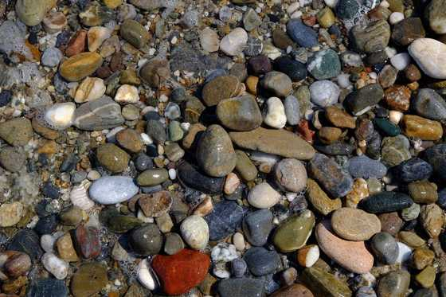
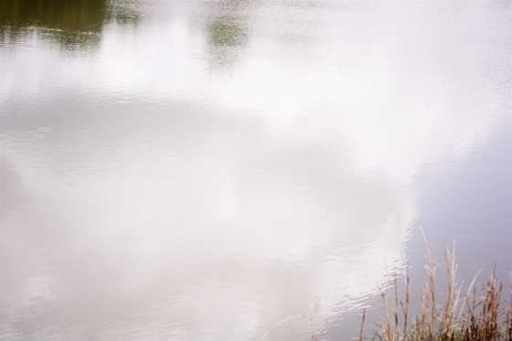
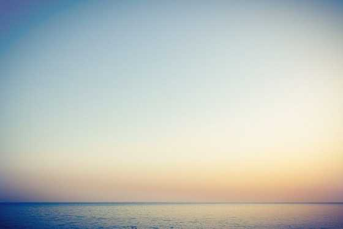
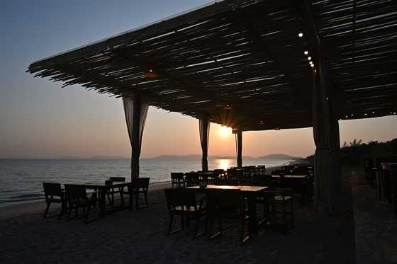
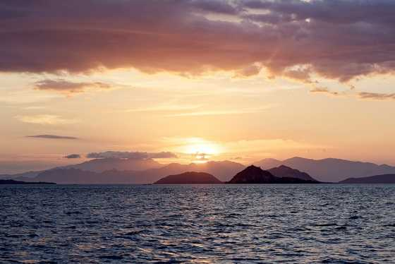
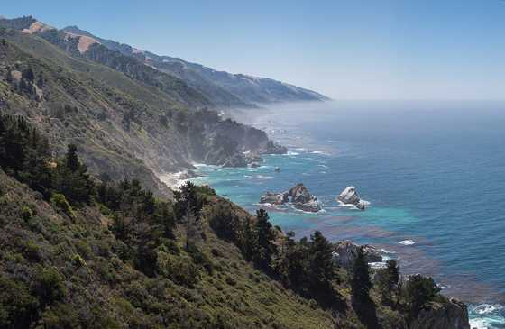

2023年12月25日、石巻市築山の住宅街にオープン。店主の昆野ふく子さんが、東日本大震災で亡くなったお母さまが料理教室を開いていた場所を改装して始めたお店だと、地元紙で紹介されています。
店名の「Larimar(ラリマー)」は、ヒーリングストーンとして知られる宝石に由来し、癒やしの空間になるようにとの思いが込められているそうです。「おいしい料理を安く提供する」ことがモットーで、「近所の人や仕事終わりの人に、気軽に寄ってもらえる場所に」と語られています。


掲載の写真はフリー素材のイメージで、店舗の実際の様子ではありません。実際の店内・商品写真はご提供いただいたものに差し替えます。
お店の由来・想い
2023年12月25日、石巻市築山の住宅街にオープン。店主の昆野ふく子さんが、東日本大震災で亡くなったお母さまが料理教室を開いていた場所を改装して始めたお店だと、地元紙で紹介されています。
店名の「Larimar(ラリマー)」は、ヒーリングストーンとして知られる宝石に由来し、癒やしの空間になるようにとの思いが込められているそうです。「おいしい料理を安く提供する」ことがモットーで、「近所の人や仕事終わりの人に、気軽に寄ってもらえる場所に」と語られています。

上記は河北新報(2024年3月13日)の記事に基づきます。このページの色合いや写真選びは、石の名にちなんだ制作側のイメージです。



メニュー
報道・紹介記事で確認できた品目です。最新のメニューと価格は変更されることがあるため、価格はすべて準備中としています。




口コミ
以下は制作側が創作したイメージ例です。実在のお客様の声ではありません。
仕事帰りにふらりと寄れて、あたたかいコーヒーでほっとできそうな店。
住宅街の落ち着いた空気の中で、ゆっくり過ごせそうなカフェ。
懐かしい喫茶店のメニューを、気軽な気持ちで楽しめそう。



アクセス
| 所在地 | 〒986-0857 宮城県石巻市築山１丁目２−９０ |
|---|---|
| 電話 | 準備中 |
| 営業時間 | 準備中 |
| 定休日 | 準備中 |
| SNS | Instagram @cafe_larimar |
営業時間・定休日は変更や臨時のお休みがあるため、Instagramでご確認ください。


全てフリー素材のイメージ写真です(縮小・切り抜きの加工あり)。